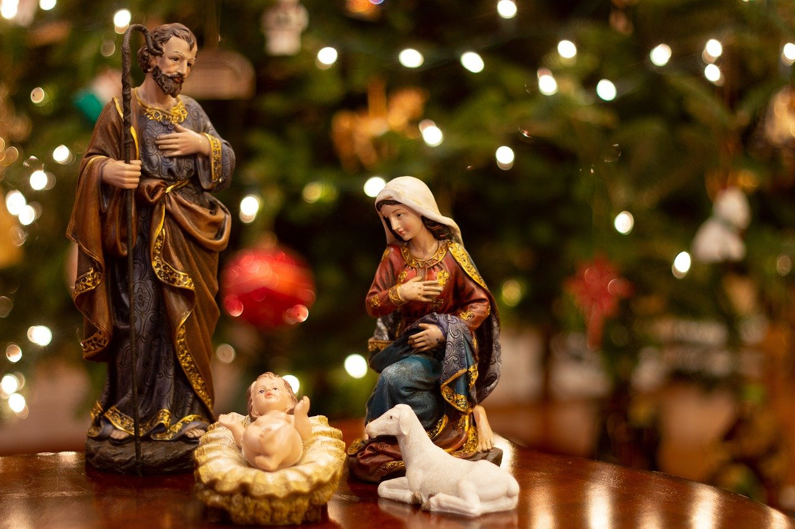

NAVIDAD
El origen preciso de la atribución del 25 de diciembre como fecha de nacimiento de Jesús no está claro. Según la obra británica, esto ocurre porque no hay indicios claros sobre la fecha en el Nuevo Testamento de la Biblia, es decir, en el conjunto de libros sagrados para el cristianismo.
Una explicación generalizada del origen de esta efeméride es que el 25 de diciembre se produjo la cristianización del dies solis invicti nati (día del nacimiento del sol invicto), informa la Enciclopedia. La festividad era popular en el Imperio Romano y celebraba el solsticio de invierno (en el hemisferio norte) como símbolo del resurgimiento del sol, al mismo tiempo que marcaba el comienzo del invierno y el anuncio del renacimiento de la primavera y el verano.
Pero la relación con la fiesta pagana romana aún existía. Después de que la fecha del 25 de diciembre fuera ampliamente aceptada como la fecha del nacimiento de Jesús, los escritores cristianos de la época a menudo relacionaban el renacimiento del sol con el nacimiento del "hijo de Dios".

ARBOL DE NAVIDAD HIDSTORIA
Su forma triangular es representación de la Santísima trinidad (Padre, hijo y espíritu Santo), mientras que las esferas y colores simbolizan los dones de Dios a los hombres. Las luces representan la luz de Cristo y la estrella colocada en la punta del árbol, representa la fe que debe guiar la vida del cristiano.
Actualmente, el árbol de navidad es un símbolo alrededor del mundo para celebrar esta época del año. Ya sea natural o artificial, este es un clásico para adornar las casas, oficinas y tiendas. Además, este se asocia con la llegada de Papá Noel o Santa Claus, quien deja regalos debajo del árbol, los cuales simbolizan los dones que Dios dio durante el año.
LA CENA NAVIDEÑA
Para muchas personas, la nochebuena celebra el nacimiento de Jesús y la cena navideña representa la última cena que tuvo con sus apóstoles antes de morir.
Para otras personas, la cena representa el fin de las cosas malas que sucedieron durante el año y el nacimiento de mejores tiempos.
Sin embargo, aunque el origen de la cena navideña es muy diferente a las celebraciones que se realizan hoy, la comida es el componente primordial que une a las familias. Hoy todos esperamos esta fecha para disfrutar de un rico pavo relleno, romeritos, bacalao, acompañados por el complemento perfecto: una baguette recién hecha.
Sin importar cuál sea tu menú favorito, ya falta muy poco para disfrutar estos momentos con las personas que más amas y es un buen momento para agradecer por el año que está a punto de terminar.